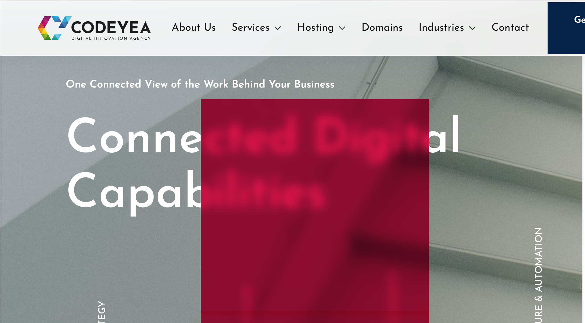
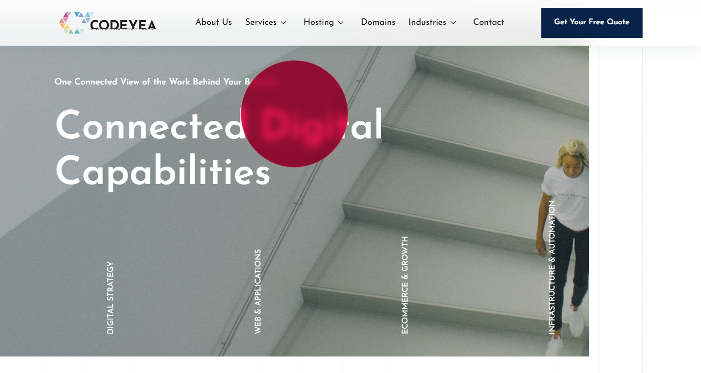

The supplied screenshot and the actual production route are shown together. The glass pointer is 220px and circular; its color, glass and motion are preserved.


Open actual About page · Navigation and footer scroll measurements · Backend configuration status